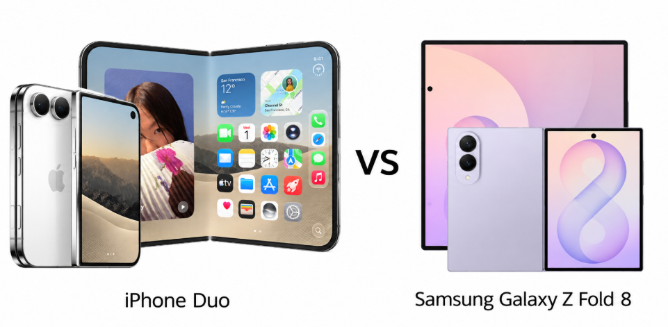
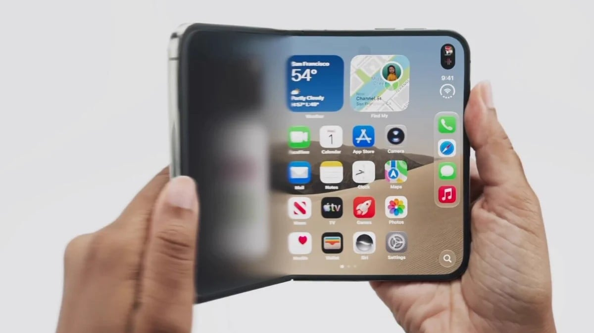
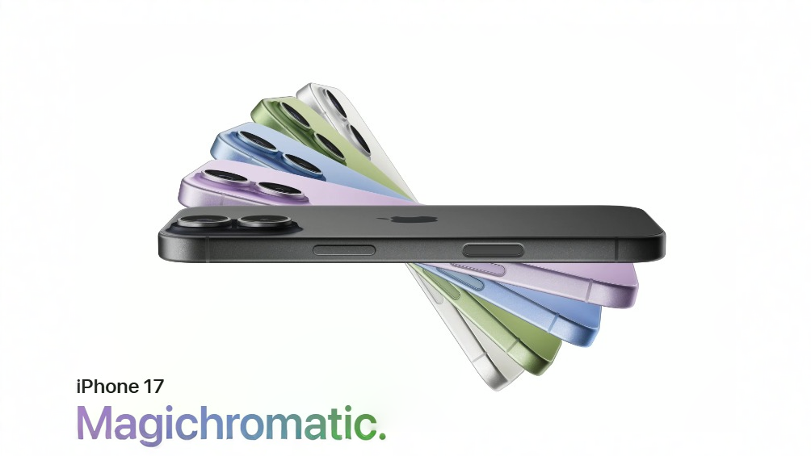
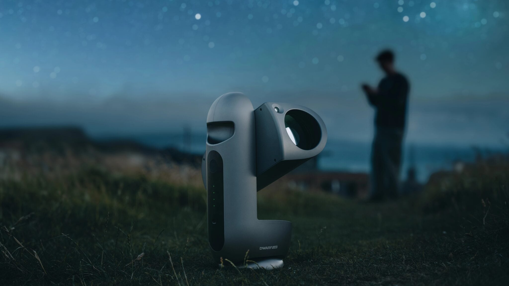
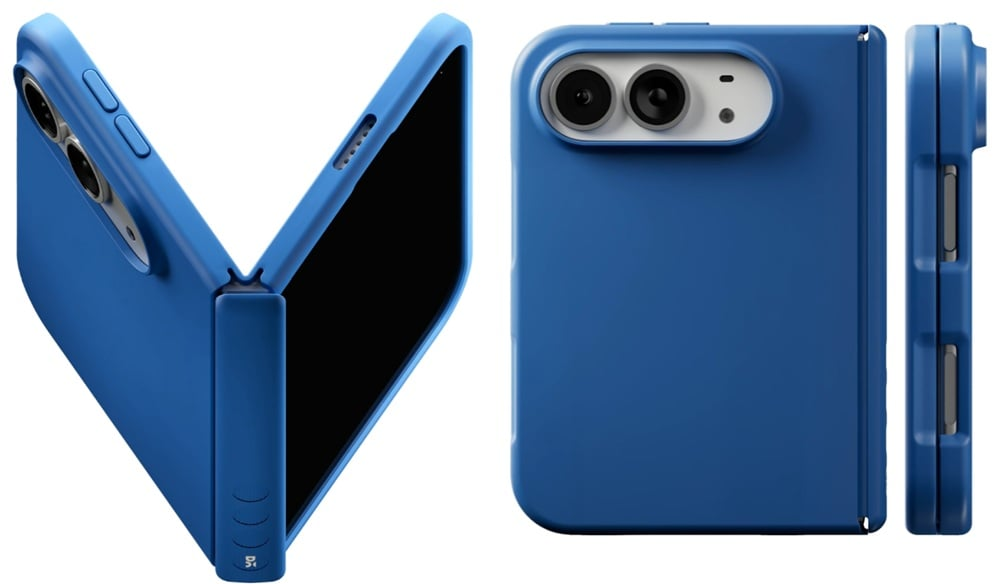

THE TECH EDIT
기술의 변화, 매일 한눈에.
카메라 · 스마트폰 · AI, 해외 테크 소식을 모아 전합니다.
최근 발행2026-09-12
새로 들어온 소식
LATEST STORIES최신 뉴스
전체 2,902개 기사T-Mobile, iOS 27 '듀얼 SIM 원 넘버' 기능 아이폰 핸드오프에 월 5달러 부과 예정
Starsense 반도체, 5G 및 위성 듀얼 모드 칩 지원 핵심 기술 심화
농담이 아니다! Rapidus 사장 고이케 아쓰요시, 2040년 전후 달에 반도체 공장 건설 구상
퀄컴과 삼성전자, 2nm 파운드리 계약 가격 이견으로 협상 난항
새로운 오포 Find X10 유출, 프로 맥스 모델에 트리플 200MP 카메라 등 사양 재확인
OPPO A7 Pro 스마트폰 첫 판매: 8000mAh 배터리, IP69K 인증, 2199위안부터
Nubia NaviX Ultra 스마트폰 '블루 미러' 외관 공개, 공식 발표에 따르면 깊고 순수함
세계 최초 AI 에이전트 스마트폰, Nubia NaviX Ultra 2억 화소 메인 카메라 탑재 예정
네티즌, 아이폰 듀오 개폐 애니메이션 재현
iQOO 16 스마트폰 공개: "로봇 팔"로 연결된 트리플 카메라 + 플로팅 글라스, 9월 말 출시
아이폰 듀오 vs 픽셀 11 프로 폴드: 다음 폴더블 스마트폰, 애플인가 구글인가?
아이폰 듀오 vs 아이폰 18 프로 맥스: 2,000달러 폴더블 또는 더 현명한 구매?

아이폰 듀오 vs 갤럭시 Z 폴드 8: 마침내 삼성에 도전하는 애플

아이폰 듀오의 가장 멋진 소프트웨어 트릭, 삼성 갤럭시 Z 폴드 8에서 몇 시간 만에 재현

아이폰 18 시리즈 출시 후 전 세계적으로 비싸지는 아이폰 17 시리즈

드워프랩, 전문가용 천체 사진 촬영을 위한 휴대용 스마트 망원경 '드라코' 출시

DailyObjects, 폴더블 스마트폰에 최적화된 역대 최대 규모의 아이폰 케이스 컬렉션 출시
카운터포인트: 2026년 폴더블 디스플레이 스마트폰 패널 출하량 23% 증가 예상, 가장 큰 증가는 Apple에서 나올 것
iOS 27 RC의 새로운 단서: Apple 최초의 폴더블 아이폰 듀오, Mac과 유사한 엣지 라이팅 기능 탑재 예정
Apple 최초의 폴더블 iPhone Duo, iOS 27.1에서 두 개의 동영상 동시 재생 미지원 소식
Apple CEO 테르누스 등 고위 임원 최신 인터뷰: 왜 이제야 폴더블 디스플레이 시장에 진출하고, iPhone Duo 가격과 디자인 방향은?
검색 결과가 없습니다
다른 검색어를 입력하거나 필터를 초기화해 보세요.